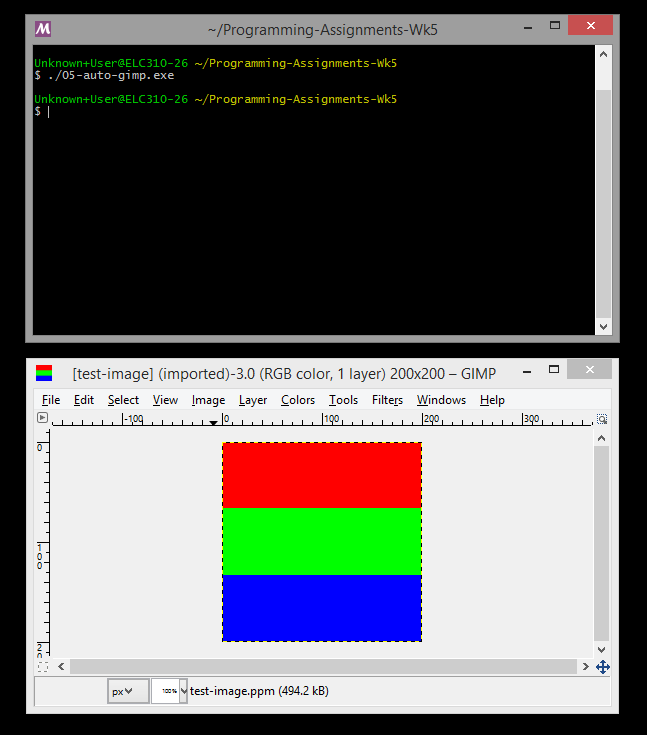

---

layout: default
title: 05-auto-gimp

---

{% highlight c++ %}
// Tyler Mumford, 2014
// Creating some images and automatically opening them in GIMP.

#include <stdio.h>
#include <stdlib.h>
#include <string.h>

int main () {
	const int WIDTH = 200, HEIGHT = 200;
	const unsigned char RED[] = {1,0,0}, GREEN[] = {0,1,0}, BLUE[] = {0,0,1};

	int i, j;
	FILE *testppm;
	char *filename = "test-image.ppm";
	char command[100] = "\"C:\\Program Files\\GIMP 2\\bin\\gimp-2.8.exe\" ";
	strcat(command, filename);

	testppm = fopen(filename, "w");

	fprintf(testppm, "P6\n%i %i\n1\n", WIDTH, HEIGHT);
	for (i=0; i<WIDTH; i++) {
		for (j=0;j<HEIGHT; j++) {
			if (i<HEIGHT/3) fwrite(RED, 1, 3, testppm);
			else if (i<HEIGHT*2/3) fwrite(GREEN, 1, 3, testppm);
			else fwrite(BLUE, 1, 3, testppm);
		}
	}

	fclose(testppm);
	system(command);

	return 0;
}
{% endhighlight %}


